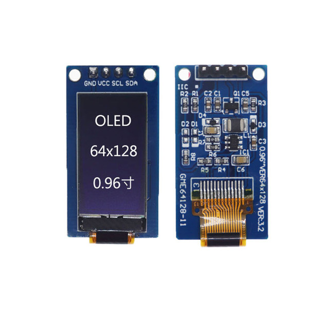
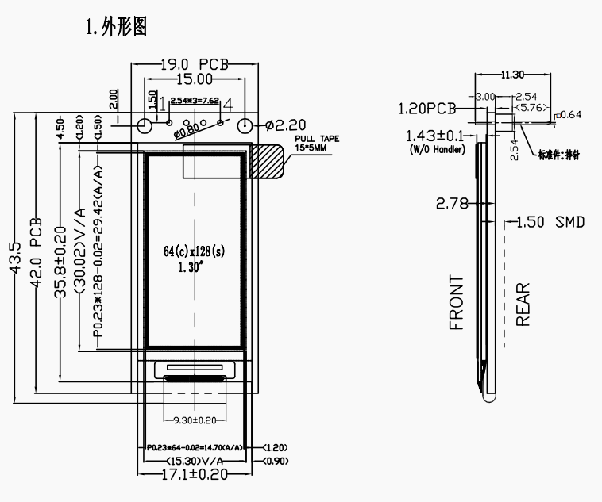
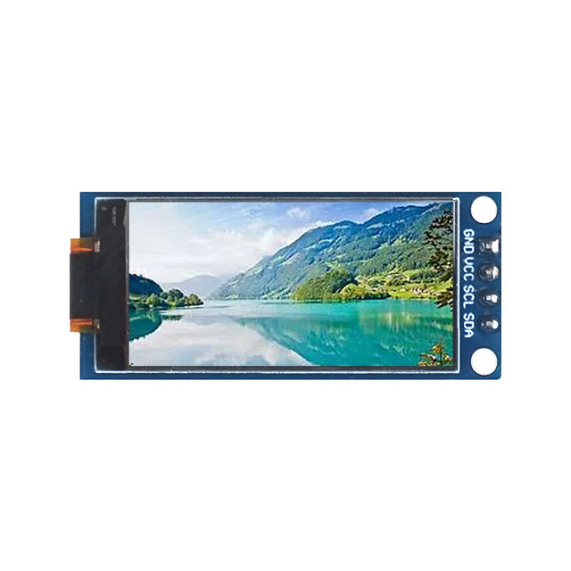
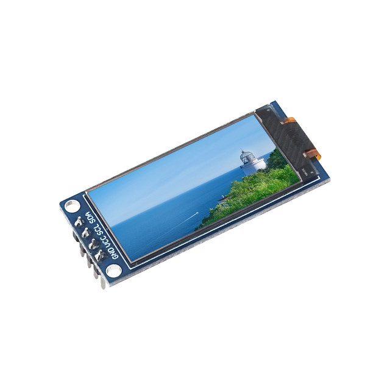
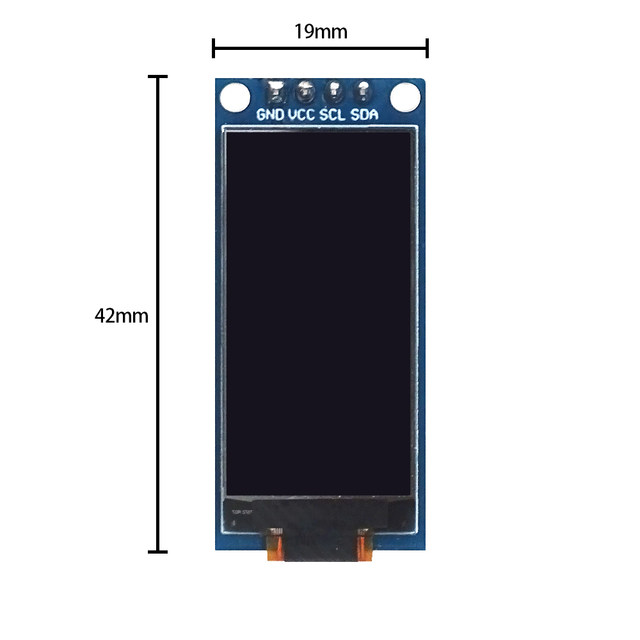
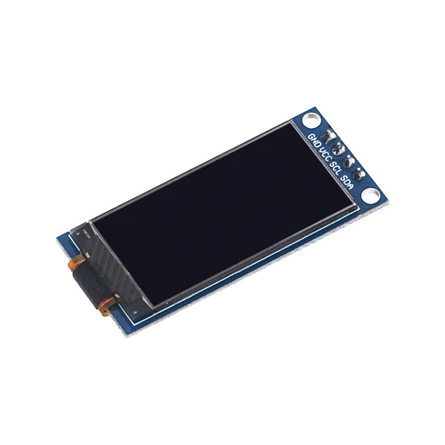

3. Mechanical specifications
3-1. Module size: 36 5mm(L)*19m(W)*11. 3Maxmm(T)
3-2. Visible area (V/A): 22 74m(L)*11.86m(W)
3-3. Effective area (A/A): 21 74m(L)*10.86m(W)
3-4. Point distance: 0 17mm(L)*0.17mm(W)
3-5. Point size: 0 15mm(L)*0.15mm(W)
2. Functions&Features
2-1. Dot matrix: 64X128 Dots
2-2. OLED mode: positive
2-3. Drive mode: 1/64 Duty
2-4. LCM working voltage (VDD): 3 3V
2-5. OLED drive voltage VLCD (VOP): 9 0V
2-6. Working temperature: - 40C~70 ° C
2-7. Storage temperature: - 40 ° C~85 ° C
2-8. Connection mode/drive IC: COG/SH1107
Interface: IIC

1.3 inch
2. Functions&Features
2-1. Dot matrix: 64 (C) X128 (S) Dots
2-2.0 LED mode: positive
2-3. Display: OLED (monochrome)
2-4. LCM working voltage (second pin Vcc): 3.3~5V
2-6. Working temperature: - 40C~70C
2-7. Storage temperature: - 40C "85C
2-8. Connection mode/drive IC: COG/SH1107
Interface: IIC
3. Mechanical specifications
3-1. Module size: 19 * 43.5 * 11 3Max(T) m
3-2. Visible area (V/A): 15 3*30.02mm
3-3. Effective area (A/A): 14 7*29.42mm
3-4. Point distance: 0 23*0.23mm
3-5. Point size: 0 21*0.21m




